Co-op Commander Guide: Karax
Khalai Phase-Smith
Sections on this Page
Commander Summary
Karax uses powerful static defenses backed up by robotic units and the Spear of Adun to control the battlefield.

Level Unlocks
| Level/Icon | Name | Description |
|---|---|---|
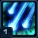 |
Master Machinist | Karax's combat units have 50% increased life, but cost 30% more. Orbital Strike no longer has a cooldown or a charge count, and now costs 5 energy per shot. |
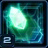 |
Spear of Adun: Chrono Field |
Increases the production speeds of all friendly structures by 15%. Passive ability. |
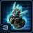 |
New unit: Khaydarin Monolith |
Extremely powerful defensive structure. Has superior range and damage, but is very expensive and attacks slowly. Can attack ground and air units. |
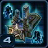 |
Twilight Council Upgrade Cache |
Unlocks the following upgrades at the Twilight Council:
|
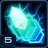 |
Spear of Adun: Chrono Overload | Chrono Wave now increases the production speed of all friendly structures to 500% for 20 seconds. |
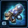 |
Forge Upgrade Cache |
Unlocks the following upgrade at the Forge:
|
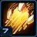 |
Spear of Adun: Reconstruction Beam |
Friendly mechanical units and structures are automatically repaired over time . Up to 3 targets can be repaired at once. Passive ability. Units are repaired at 5HP/second while Structures are repaired at 10HP/second. |
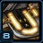 |
Solar Forge Upgrade Cache 1 |
Unlocks the following upgrades at the Solar Forge:
|
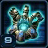 |
Robotics Bay Upgrade Cache |
Unlocks the following upgrades at the Robotics Bay:
|
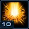 |
Spear of Adun: Purifier Beam | Fires a beam that deals 750 (1500 vs armored) damage over 15 seconds. The beam will auto-acquire targets if not manually controlled. |
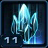 |
Khalai Ingenuity | Pylons, Photon Cannons, Khaydarin Monoliths, and Shield Batteries warp in instantly. |
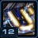 |
Solar Forge Upgrade Cache 2 |
Unlocks the following upgrades at the Solar Forge:
|
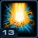 |
Spear of Adun: Purifier Protocol | Increases the Purifier Beam's movement speed by 200% and its duration by 5 seconds. |
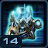 |
Fleet Beacon Upgrade Cache |
Unlocks the following upgrades at the Fleet Beacon:
|
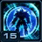 |
Unity Barrier | All friendly units gain a barrier that will block an attack or spell that deals at least 20 damage. This barrier is gained upon the unit's creation and can only be gained once every 240 seconds. |
Highlighted rows denote large power spikes for the commander.
Achievements
The commander-specific achievements for Karax are:
| Achievement | Name | Description |
|---|---|---|
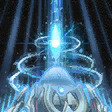 |
Fast Friends | Use Chrono Wave to speed up the training of 500 of your ally's units in Co-op Missions. |
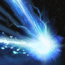 |
Scorched Earth | Kill 200 enemy units with Karax's Solar Lance in a single mission on Hard difficulty. |
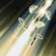 |
Target Purified | Kill 50 enemy units with a single strike of Karax's Purifier Beam on Hard difficulty. |
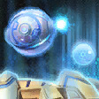 |
Tower Defense | Kill 1,000 enemy units with Karax's defensive structures in Co-op Missions. |
Calldowns
The calldowns for Karax, at level 15, with no mastery points added are:
| Calldown | Name | Description | Recommended Usage | Numbers |
|---|---|---|---|---|
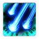 |
Orbital Strike | Fires lasers onto the battlefield from orbit, each of them dealing 50 (100 vs armored units) area damage. |
|
|
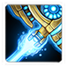 |
Solar Lance | Strafes the target area with 3 laser beams dealing 200 damage with each beam. |
|
|
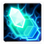 |
Chrono Wave | Increases the production speeds of all friendly structures to 500% for 20 seconds |
|
|
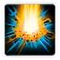 |
Purifier Beam | Fires a beam that deals 1000 (2000 vs Armored) damage over 20 seconds. The beam will auto-acquire targets if not manually controlled. |
|
|
Sub-Ascension Leveling
Difficulty: Hard
Karax is difficult to level due to the fact that he cannot instantly warp in cannons and static defense, as it standard in his gameplay, while having extremely expensive units. Rely on Sentinels, Immortals and Energizers as part of your army composition. Take the mission slow to reduce unnecessary losses. Rely on your Spear of Adun abilities as much as possible to weaken enemy bases and attack waves.
Masteries
Below are the three Power Sets for Karax with the recommended point allocations for each. Note that these are meant to serve a general, all-purpose build that is effective across all maps with no Prestiges selected. You are highly encourged to change these masteries to suit your playstyle and particular challenges you face (e.g. Weekly Mutations).
Power Set 1:
| Power | Value | Recommended Points to Add | Further Considerations |
|---|---|---|---|
| Combat Unit Life and Shields | 1% per point 30% maximum |
? | Players that utilize a lot of Tower pushing strategies will find benefit in the Structure mastery, whereas players that utilize a lot of Karax's units will find the Unit Life mastery more useful. Additionally, the Unit Life mastery is multiplicative, which means it compounds directly with the initial 50% Life increase from Karax's talent. A full mastery would give a unit 95% additional HP. |
| Structure Life and Shields | 2% per point 60% maximum |
? |
These masteries depend on your playstyle. If you prefer doing builds which utilize a lot of static defense, the Structure Life mastery is a better option. However, due to the nature of co-op and how aggressive play is rewarded, the Combat Unit Life mastery is a better pick here for general play.
Power Set 2:
| Power | Value | Recommended Points to Add | Further Considerations |
|---|---|---|---|
| Repair Beam Healing Rate | 3% per point 90% maximum |
? | This is mostly a playstyle choice. The Chrono Wave Energy Regeneration mastery can help players who rely a lot on the Spear of Adun's abilities to weaken attack waves and enemy entrenchments before they engage with their army. The Repair Beam healing mastery can help in moments where a player is required to have long engagements and sustained combat. It can provide the healing required to prevent players from losing units more frequently. |
| Chrono Wave Energy Regeneration | 3 per point 90 maximum |
? |
The choice of this mastery will depend on the player's playstyle and choice of prestige, as both are competitive choices.
Power Set 3:
| Power | Value | Recommended Points to Add | Further Considerations |
|---|---|---|---|
| Chrono Boost Efficiency | 1% per point 30% maximum |
0 | The Chrono Boost mastery can allow Karax to complete his researches and get units out at a very fast pace. However, this may hurt his ability to fast expand if too many points are added to that mastery. |
| Initial and Maximum Spear of Adun Energy | +3 per point +90 maximum |
30 |
The Initial energy here is the best choice because it allows Karax to fast-expand on almost all maps with minimal issues.
Prestiges
Below are the prestiges for Karax. Note that "Effective Level" is the level at which the prestige achieves it full effect.
| Level | Name | Description | Effective Level | Notes |
|---|---|---|---|---|
| 1 | Architect of War |
|
15 |
|
| Due to the fact that the Repair Beam only unlocks at level 7 and the Unity Barrier at level 15, this prestige has no disadvantage until level 7 and should be used until that level. This prestige encourages a static defense-style play for Karax by empowering his structures with various chrono abilities and healing. However, due to the nature of co-op, defensive-style play is not rewarded and this prestige, albeit well-tailored for this type of play, does not help the player get any additional value. | ||||
| Level | Name | Description | Effective Level | Notes |
|---|---|---|---|---|
| 2 | Templar Apparent |
|
1 | None |
| This prestige puts Karax in a great position to build units, and this does not only include Carriers, which can now be rushed out quickly with this Prestige. Karax is able to build up a reasonable mass of units quickly, at the cost of static defense. This does mean that on missions where static defense is required (e.g. Oblivion Express vs. Terran to stop Nukes), he will need to resort to other methods of detecting cloaked attackers at his base. | ||||
| Level | Name | Description | Effective Level | Notes |
|---|---|---|---|---|
| 3 | Solarite Celestial |
|
10 | None |
| This prestige improves Karax's Spear of Adun abilities at the cost of him losing his ramp up capabilities. The Spear of Adun is a key pillar in good Karax play, and players that know how to use the Spear of Adun to its maximum potential can gain a lot of value from this prestige. Due to the highly reduced costs of Spear of Adun abilities, players do not need to rely on the Chrono abilities in order to get a reasonably-sized army out in the early game. Instead, a small handful of units are more than enough, as the Spear of Adun becomes the primary damage dealer in the mission. This prestige emphasizes Spear of Adun play, and players will need to get familiar with this style of play in order to utilize this prestige to its maximum potential. | ||||
Templar Apparent puts Karax in the perfect position to be a reasonably powerful commander by reducing the cost of his once-expensive units. This allows for Karax to develop an early-game presence, and opens up a variety of playstyles that were prohibitive due to high unit costs. This prestige is the recommended prestige for general Karax play.
Recommended Army Composition
The recommended army composition for Karax is below. Note that this assumes no Prestige talent selected and recommended Mastery Allocations. This is a basic recommendation for your army framework. It is recommended to gain an understanding for each of the units in the Units section and further add tech units so that you are able to better handle the situations you face.
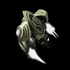
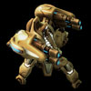
Immortals are the primary damage-dealers for Karax. Use Sentinels to tank for Immortals while the Immortals deal damage from behind. This build does not have any anti-air, and you will need to use your Spear of Adun and Shadow Cannons to kill off air units. Additionally, when fighting against Mechanical compositions, Energizers should also be used to reclaim some of those units.
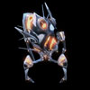
Add Colossi to your army for extra splash damage that cannot be handled sustainably by your Spear of Adun abilities.
Combat Units
For more information on Karax's unit stats, comparison between units and upgrade calculations, visit the Data Tables page.
Karax's combat units are listed below:
Sentinel
- Not very useful if you want to deal DPS.
- Good units to tank while more expensive units in the back deal damage.
Skills:
| Skill | Name | Description | Cooldown | Energy Cost |
|---|---|---|---|---|
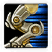 |
Charge | Intercepts enemy ground units and increases movement speed. | 10 seconds | 0 |
Upgrades:
| Upgrade | Name | Effect |  / / |
Research Time |
|---|---|---|---|---|
 |
Charge | Allows Sentinels to intercept nearby enemies. Also increases the movement speed of Sentinels by 0.25. | 100/100 | 60 seconds |
 |
Reconstruction | Sentinels are revived when killed. This effect can only occur once every 120 seconds. | 100/100 | 90 seconds |
Energizer
- Extremely powerful and versatile unit.
- Can be used to reinforce your army through warp-ins.
- They increase the attack and movement speed of your units and structures through Chrono Beam.
- "Reclamation" is great when dealing with mechanical compositions like Air Terran.
Skills:
| Skill | Name | Description | Cooldown | Energy Cost |
|---|---|---|---|---|
| Chrono Beam | Friendly target gains 25% attack speed and 50% movement speed for 10 seconds. | 0 seconds | 3 | |
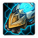 |
Reclamation | Temporarily takes control of target enemy mechanical unit. Reclaimed units self-destruct after 120 seconds. | 120 seconds | 50 |
Upgrades:
| Upgrade | Name | Effect | / |
Research Time |
|---|---|---|---|---|
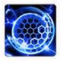 |
Rapid Recharging | Increases the energy regeneration rate of Energizers and Shield Batteries by 200%. | 100/100 | 90 seconds |
 |
Reclamation | Energizers gain the ability to temporarily take control of enemy mechanical units. Reclaimed units self-destruct after 120 seconds. | 150/150 | 120 seconds |
Immortal
- Powerful unit that deals great damage to structures and armored targets.
- Shadow Cannon is a good ability that can help Immortals burst down units and deal with air targets.
Skills:
| Skill | Name | Description | Cooldown | Energy Cost |
|---|---|---|---|---|
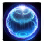 |
Barrier | Absorbs up to 100 damage. Lasts for 10 seconds. | 60 seconds | 0 |
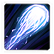 |
Shadow Cannon | Deal 320 damage to target unit or structure. Can target ground and air units. |
45 seconds | 0 |
Upgrades:
| Upgrade | Name | Effect | / |
Research Time |
|---|---|---|---|---|
 |
Shadow Cannon | Allows Immortals to use Shadow Cannon. Deals 320 damage to target unit or structure. Can target ground and air units. |
100/100 | 120 seconds |
Colossus
- Niche unit that's usually good on infested maps.
Skills: None
Upgrades:
| Upgrade | Name | Effect | / |
Research Time |
|---|---|---|---|---|
 |
Extended Thermal Lance | Colossi gain +3 range. | 100/100 | 90 seconds |
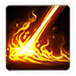 |
Fire Beam | Upgrades the damage dealt by Colossi and causes their attacks to set fire to the ground, dealing an additional 150 damage to enemy ground units in the area over 5 seconds. | 100/100 | 120 seconds |
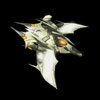
Mirage
- Generally not worth making due to its weakness against armored targets.
Skills:
| Skill | Name | Description | Cooldown | Energy Cost |
|---|---|---|---|---|
| Graviton Beam | Makes the target unit float in the air, disabling its abilities. Effect lasts up to 10 seconds. Massive units are immune. |
30 seconds | 0 |
Upgrades:
| Upgrade | Name | Effect | / |
Research Time |
|---|---|---|---|---|
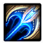 |
Anion Pulse-Crystals | Mirages gain +2 range. | 100/100 | 60 seconds |
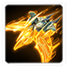 |
Phasing Armor | Prevents Mirages from taking damage for 2 seconds after being attacked. Cannot occur more than once every 5 seconds. | 100/100 | 90 seconds |
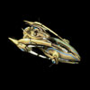
Carrier
- High DPS with the Graviton Warp Catapult upgrade.
- Recommended when using the Templar Apparent prestige.
Skills:
| Skill | Name | Description | Cooldown | Energy Cost |
|---|---|---|---|---|
 |
Build Interceptor | Builds Interceptors that automatically attack the Carrier's target. Carriers may not attack without Interceptors. Can attack ground and air units. 8 Interceptors max. |
10 seconds | 0 |
Upgrades:
| Upgrade | Name | Effect | / |
Research Time |
|---|---|---|---|---|
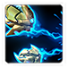 |
Repair Drones | Carriers gain two repair drones that automatically heal nearby friendly mechanical units. | 100/100 | 120 seconds |
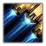 |
Graviton Warp Catapult | Makes the Carrier launch Interceptors more quickly and increases Interceptor attack speed by 25%. | 150/150 | 120 seconds |
Build Order
Below is the standard economic build order for Karax. For more information on how to read and construct your own build orders, please check the Build Order Theory page.
20x Orbital Strike -> Rocks
15 Nexus
15 Pylon
17 Assimilator
18 Assimilator
20 Forge
26 Cannon -> Gas Rock
32 Cannon -> Gas Rock
Gameplay Guide
Playstyle Traps
A common trap for Karax players is to rush to a Mass Carrier build. While Carriers are highly effective on most missions, rushing Carriers without assisting your ally can lose you the game, especially when early-game objectives are slightly more challenging.
A more effective playstyle is to build static defenses to guard/push into objectives while you tech up to Carriers. This reduces the pressure on your ally, and can guarantee a victory.
Tower Pushing
Karax has a few static defense structures available to him. These are shown below:
| Building | Name | Stats |
|---|---|---|
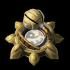 |
Photon Cannon | Detector HP: 150 Shield: 150 Damage: 20 Range: 7 Speed: 1.25 |
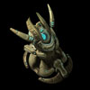 |
Khaydarin Monolith | HP: 100 Shield: 200 Damage: 100 Range: 13 Speed: 3 |
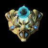 |
Shield Battery | HP: 200 Shield: 200 Energy: 200 Range: 4 3 Shield/1 energy |
One of the advantages of Karax is his ability to instantly warp in Pylons and static defense at a position. This allows for an unorthodox playstyle where you use Probes to push into enemy bases, while being backed up by the Spear of Adun.
This playstyle does require practice, but at high levels of play, can be very effective and a lot of fun, even though it may not be as effective as pushing with an army. When building up static defense at an area, it's important to first consider the reason for that defense. This will affect how many structures you build and how you lay them out.
For standard pushes into enemy bases, it is often best just to build a Pylon and a few Photon Cannons so that you can clear the enemies guarding it. After all, these defenses will not be used after the base has been cleared.
However, if you intend to building defenses to defend against attack waves, then more knowledge of Attack Wave timings and compositions is required. The below gives you an example of how to set up a defensive area with Karax:
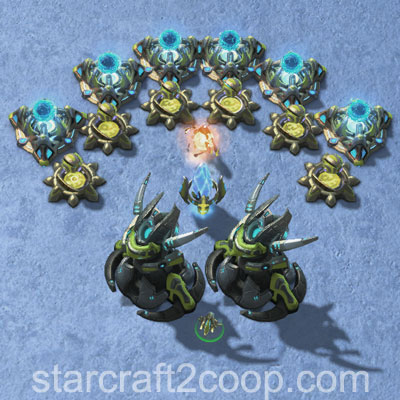
There are a few things to note here:
- Notice the Shield Batteries are placed in front of the Photon Cannons. This will force enemy units to move around the Shield Battery to destroy the Cannons once they get targeted.
- The types of structures you will build will solely depend on the enemies you are trying to defend against:
- Khaydarin Monoliths for dealing with high-HP targets.
- Photon Cannons for all else.
- The Energizer in the middle is placed into Phasing mode, reducing its aggro index, making it less likely to be targeted by enemies.
- The spaces in between the structures on the frontline (Shield Batteries and Photon Cannons) is minimal to prevent enemy units from getting a wrap-around, reducing their effectiveness.
Karax has upgrades that can improve his static defense. The upgrades are listed below:
| Upgrade | Name | Effect | / |
Research Time |
|---|---|---|---|---|
| Rapid Recharging | Increases the energy regeneration rate of Energizers and Shield Batteries by 200%. | 100/100 | 90 seconds | |
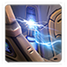 |
Enhanced Targeting | Photon Cannons, Khaydarin Monoliths, and Shield Batteries gain +2 range. | 100/100 | 120 seconds |
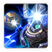 |
Optimized Ordnance | Increases the attack speed of Photon Cannons and Khaydarin Monoliths by 25%. | 100/100 | 120 seconds |
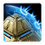 |
Fortification Barrier | Allows Shield Batteries to grant target structures a barrier that absorbs up to 100 damage for 10 seconds. | 100/100 | 60 seconds |
In addition to these upgrades, his static defenses are affected by Protoss Shield upgrades. They are not affected by armor or attack upgrades, however.
Static Defense should be backed up by Spear of Adun abilities. For example, the Spear of Adun should be used to weaken enemy forces, reducing the losses on Static Defense. Karax has a number of upgrades that can improve the performance of the Spear of Adun.
| Upgrade | Name | Effect | / |
Research Time |
|---|---|---|---|---|
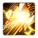 |
Advanced Repair Systems | Allows the Spear of Adun's Reconstruction Beam to affect additional targets, for a total of up to 5. | 150/150 | 90 seconds |
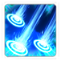 |
Phase Detonation | The Spear of Adun's Orbital Strike stuns enemy units in the target area for 1.5 seconds. | 150/150 | 120 seconds |
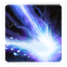 |
Solar Flare | The Spear of Adun's Solar Lance sets fire to the ground along its path, dealing 600 extra damage over 20 seconds. | 150/150 | 120 seconds |
Solar Efficiency Levels
The table below summarizes the different Solar Efficiency levels available to Karax. Note that the base energy regeneration is roughly 16 energy/minute.
| Level | Requirements | Bonus Energy | Total Energy Gain | / |
Research Time |
|---|---|---|---|---|---|
| 1 | None | 1 energy/6 seconds | 26 energy/minute | 100/100 | 90 seconds |
| 2 | Twilight Council | 3 energy/6 seconds | 46 energy/minute | 150/150 | 120 seconds |
| 3 | Fleet Beacon/Robotics Bay | 6 energy/6 seconds | 76 energy/minute | 200/200 | 180 seconds |
Fast Expanding
On certain maps with a small number of enemies and structures blocking expansions, Karax can fast expand. These fast expand techniques are difficult as most of the time, Solar Lance will be shot into the dark and therefore will require a lot of practice.
Below are pictures that show how to fast-expand on maps. These require a lot of practice to pull off, but can put you ahead economically.
| Map | Race | Player 1 Expansion | Player 2 Expansion |
|---|---|---|---|
| Chain of Ascension | 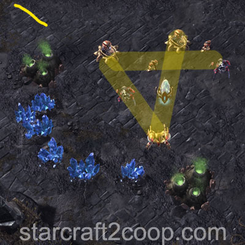 |
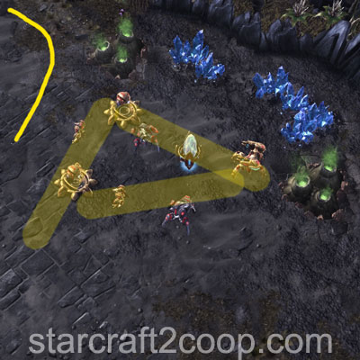 |
|
| Cradle of Death | Run both trucks straight past the forward construct towards the two Beacon Constructs. Use Orbital Strikes to kill the Beacon Constructs and trigger the first objective explosion. This will clear the expansion and the forward construct as well. | ||
| Dead of Night | No contested expansion | ||
| Lock & Load | No contested expansion | ||
| Malwarfare | |||
| Miner Evacuation | No simple fast expand exists. It is best to cannon-rush the expansion if you wish to take an early expansion. | ||
| Mist Opportunities | No contested expansion | ||
| Oblivion Express | No contested expansion | ||
| Part & Parcel | |||
| Rifts to Korhal | No contested expansion | ||
| Scythe of Amon | No simple fast expand exists. It is best to cannon-rush the expansion if you wish to take an early expansion. Make sure to use Solar Lances to clear the Void Rift before you start building Cannons. | ||
| Temple of the Past | No contested expansion | ||
| The Vermillion Problem | No simple fast expand exists. It is best to cannon-rush the expansion if you wish to take an early expansion. | ||
| Void Launch | No contested expansion | ||
| Void Thrashing | No contested expansion | ||
Playstyle Tips
- Provide your ally with a 5-to-10 second notification before you use Chrono Wave. It is a powerful ability that can get you ahead in the game and solidify a victory.
- At the start of the game, clear your expansion with the starting Spear of Adun energy, whether or not it is contested.
- Energizers draw a lot of natural aggro. Put them into Phasing mode when making long pushes to reduce their chance of being attacked.
- Chronoboosting the Solar Forge does not increase the Spear of Adun's Energy regeneration rate.
- Solar Efficiency 1 is a must-get upgrade. Solar Efficiency 2 should be obtained if you require some support from the Spear of Adun. Solar Efficiency 3 should be obtained in very niche circumstances.
- Hold Shift when Orbital Strike is selected and press any key bound to Rapidfire to fire Orbital Strikes without delay in between shots.
Video Guides
The below videos demonstrate the various fast expands explained earlier. These fast expands are much more difficult to pull off, because you will be shooting your Solar Lances into the fog of war and will require a lot of practice.